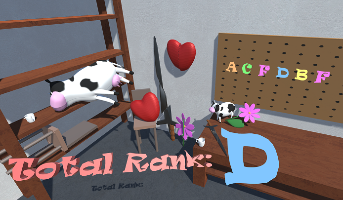

Not too much to say about it. Until now I only took part in the Game Maker's Toolkit Game Jams. This game jam is exactly 48h, and for both my entries all the programming and 3D modelling was done in that time. Not the sound though, that is from the nice site freesound.org.
The One Inside - GMTK GameJam 2019 Entry
The theme of this game jam was "only one", which I took literally and made a puzzle game out of it. The goal is to find the small golden one hidden inside the big one. There are 10 levels and each has a different trick to it for getting inside the big one. The game can be downloaded here.
Oh no! Carbon Monoxide is leaking
at the steering wheel?! - The Game
GMTK GameJam 2020 Entry
For this game jam the theme was "out of control". This time I joined the jam together with two friends and we build this game together. The idea was that the driver of a bus is unconscious and the passengers have to take turns driving the bus (the player being the one controlling the bus). Each passenger has a different handicap, making the driving diverse and out of control. To add to the "out of control"-ness, you are simultaniously chased by a UFO that shoots you. That is also the justification why the bus cannot stop. To make it more fun we upped the ridiculousness by making the reason for switching absurd, which is reflected by the title as well. The game can be downloaded here.

We can Fix that?! - GMTK GameJam 2021 Entry
The theme of this game jam was "joined together", again I wanted to join this jam with the same two friends, but one was not able to make it. So this time we are only two, with a bit of 3D-modelling help from my girlfriend. For this theme we decided to try and make a super realistic item-repair-shop-simulator, where you have to join broken objects back together. Because that would be too easy, you are not too steady with your hands. Maybe you are drunk on the job? Better not act suspicious so your boss won't notice!
The game can be played here. The web-version flickers when the camera moves, so for the _real_ experience you may want to download it.